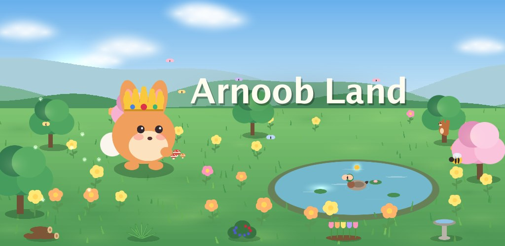
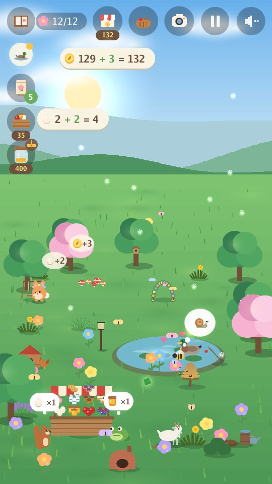
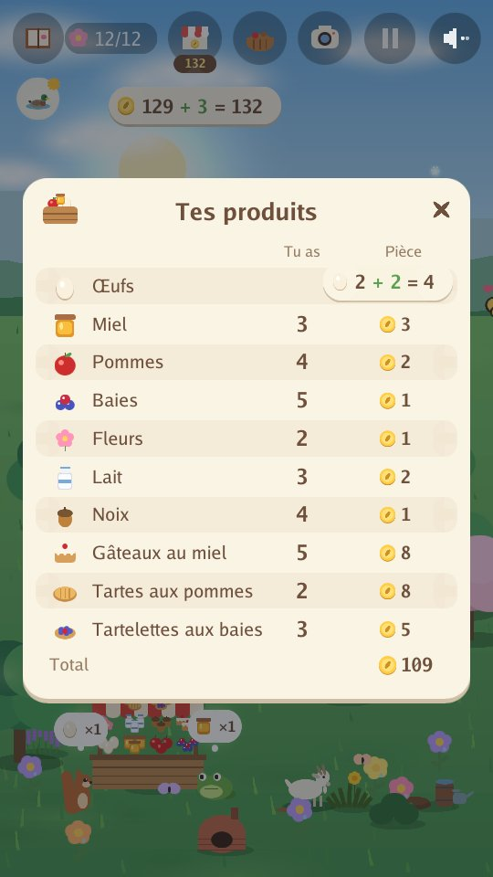
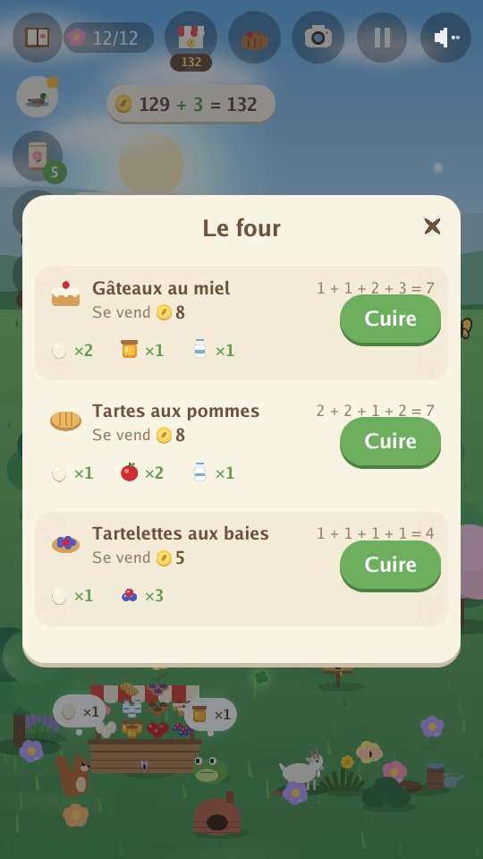
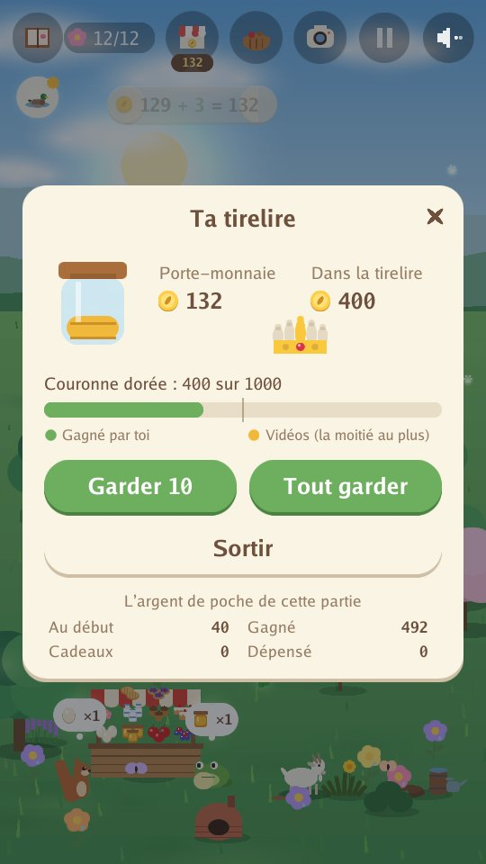

Arnoob Land
Un jeu nature tout calme pour les enfants

Un jardin tranquille a besoin de toi. Un petit lapin veut en refaire une maison, une graine après l’autre. Plante des fleurs, construis une mare, pose des friandises et regarde qui vient te rendre visite. Chaque saison amène de nouveaux amis animaux : des abeilles et des canards au printemps, des tortues et des colibris en été, des renards et des blaireaux en automne, des harfangs et des loutres en hiver.
- Calme et tout doux : pas de chrono, pas de score à perdre, rien à rater.
- Seulement les sons de la nature : le vent, l’eau, la pluie, les oiseaux et les cris des animaux. Pas de musique.
- Quatre saisons et 80 animaux dont devenir ami, avec des animaux dorés et des moments rares à découvrir.
- Regarde la lune : nuit après nuit, elle passe de la nouvelle lune à la pleine lune, puis revient, et les hiboux adorent les nuits de pleine lune.
- Prends des photos de tes amis animaux pour ton album : chaque photo rapporte une pièce.
- Apprends à prendre soin de tes amis : remarque ce dont chaque animal a besoin et construis-lui sa maison (une mare, un tas de bûches, un buisson de baies...) pour que les nouveaux amis viennent plus vite, exauce leurs vœux, aide deux amis à jouer ensemble, offre une fleur à un ami, et regarde les amitiés grandir.
- Tiens une petite ferme : nourris les poules, occupe-toi des abeilles et d’une chèvre, cueille des pommes, des baies et des fleurs, et vends-les à ton étal animé aux amis qui viennent acheter. Ce que tu as acheté se revend à moitié prix, sauf la mare, les plantes, les graines et les arbres.
- Deviens l’aide du jardin : arrache les mauvaises herbes, ratisse les feuilles et enlève la neige pour le tas de compost, qui donne une récolte en plus et une ferme plus rapide, et arrose les fleurs et les arbres fruitiers. Chaque tâche fait monter ton niveau d’aide du jardin.
- Fais de la pâtisserie et prépare les commandes : transforme les œufs, le lait, le miel, les pommes et les baies en gâteaux, tartes, tartelettes et confitures qui se vendent plus cher, et fais l’addition quand un ami apporte une petite commande.
- Compte en jouant : chaque œuf ramassé ou vendu, et chaque pièce gagnée ou dépensée, s’affiche comme une addition simple, comme 3 + 2 = 5.
- Apprends à économiser : mets des pièces dans ta tirelire, regarde-la grandir un peu chaque jour, et économise pour la couronne dorée.
- Construis la couronne dorée morceau par morceau : tes économies la remplissent d’or, et tes amis apportent ses trois joyaux.
- Un jeu tout calme à chaque saison : la pêche (les poissons retournent à l’eau), les lucioles (elles s’envolent ensuite), la récolte des noix et des pommes en automne, et un fort de neige à construire.
- Cache-cache avec tes amis : dès ton cinquième ami, tes amis se cachent dans le jardin et jouent ensemble, et quand tu les as tous trouvés, les amis dorés viennent plus souvent.
- Huit langues : anglais, arabe, chinois (simplifié), français, allemand, japonais, russe et espagnol. Le jeu démarre dans la langue de ton téléphone (en anglais pour toute autre), et le globe de l’écran d’accueil permet d’en changer. Le jeu a été écrit en anglais ; les sept autres langues ont été traduites avec l’aide de l’IA.
- Un long voyage tout doux : joue l’année entière sur beaucoup de jours, ou une partie plus courte d’une seule saison. Ton jardin est enregistré au fur et à mesure.
- Un jardin de rêve, si tu veux : économise pour une balançoire, un petit pont, une fontaine, une cabane dans l’arbre et plus encore. Tes amis s’en servent, et quatre amis secrets pourraient venir les voir.
Dans le jardin




Pour les parents
Pas de compte, pas de messagerie, pas d’achats. Les vidéos ne passent que si l’enfant choisit d’en regarder une, pour un petit cadeau dans le jeu : un panier de produits à vendre, quelques pièces, une surprise pour le jardin, des graines ou des friandises.
Politique de confidentialité app-ads.txt